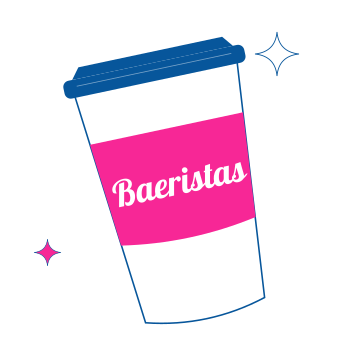
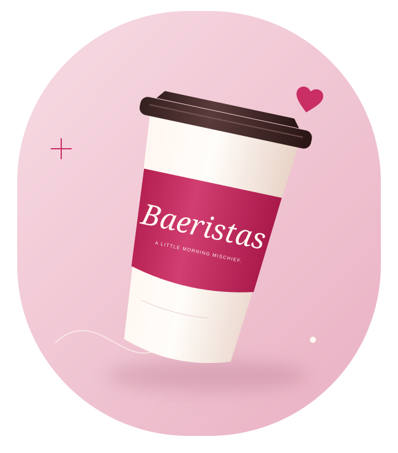
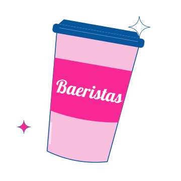
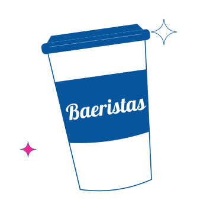

01 / THE COFFEE CRUSH

Espresso
A little bold. A lot of personality.
Woman-owned. Portland, Oregon.
A little coffee. A little chemistry. Espresso, smoothies, and energy spritzers served with personality at your Portland bikini coffee stop.
Pull up. Perk up. Drive through.

Pink looks good on your coffee run.
A crush for every craving
Meet the three sides of your next coffee run.
Same Baeristas personality. Your kind of pick-me-up.

A little bold. A lot of personality.

For a different kind of coffee run.

Bring a little extra to your day.
Illustrated brand concepts. Ask at the stand for the current menu and ingredients.
Coffee with a little chemistry
Woman-owned and full of personality, Baeristas brings a playful touch to the everyday coffee run. We're a Portland bikini coffee stand with a vegan espresso identity and a warm hello at the window.
Come for your pick-me-up. Make a little room for mischief.
We'll meet you at the windowYour next little detour
Take the scenic route.
Or just the one that ends in coffee.
01 / Northwest Portland
Check current hours before visiting.
Get directions to St Helens, opens a new tab02 / Northeast Portland
Confirm current location details before visiting.
Get directions to Sandy, opens a new tabSee you at the window
Your coffee called.
It misses you.